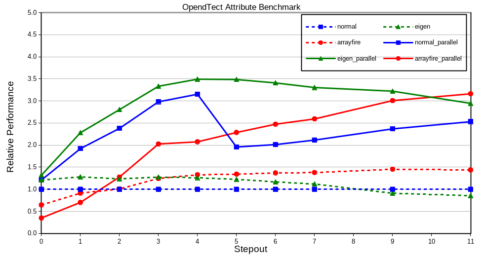

Summary
The potential to offload calculations to the graphics processing unit (GPU) on modern graphics cards is a trending topic. I was curious if this could also apply to seismic attribute calculation in OpendTect, so I implemented AVO polarization angle estimation as described by Mahob and Castagna (2003) using 3 different approaches:
- using loops for all the linear algebra and OpendTect's multi dimensional arrays (ArrayNDImpl) which I refer to as the Normal method;
- using the Eigen linear algebra C++ template library (the Eigen method) and
- using the ArrayFire linear algebra library for GPU's (the ArrayFire method).
The first 2 options only use the central processing unit (CPU). ArrayFire also supports CPU calculation but for this review only the GPU capabilities were evaluated. In all cases benchmarks were run with and without OpendTect's multi-threaded processing support. Results are summarised in the following graph showing performance relative to the single threaded Normal method for a range of input data stepouts (higher performance numbers are better):

The primary observations are:
- Both Eigen and ArrayFire can be used relatively easily within OpendTect 6.4 attribute plugins;
- OpendTect's multi-threaded processing support offers the most performance enhancement so developing the algorithm to enable multi-threading should be the first aim;
- The Eigen library offers a noticeable performance enhancement of up to 20% (relative to explicit coding of the linear algebra) for single trace and low-medium stepout attributes. Algorithms can also be expressed in fewer lines of code that is simpler to understand.
- The ArrayFire library makes it relatively easy to access the GPU compute power on the graphics card but the overhead of transferring data from the CPU to the GPU is significant and can result in poorer performance in some cases. The scale and/or compute complexity of the calculations will determine if there is any benefit to GPU calculations. In general this will require benchmarking of the particular algorithm.
The code used in this evaluation is available in my OpendTect-Plugins GitHub repository. Related details are described below.
Hardware Configuration
- Intel Core i5-3470 CPU @ 3.2Ghz
- 16GiB RAM
- GeForce GTX1050 Ti with 4GiB RAM
Sofware Configuration
Operating System:
- x86_64 GNU/Linux 4.2.0
Software:
- OpendTect 6.4.2
- gcc 8.2.1
- Eigen 3.3.7
- ArrayFire 3.6.1
- CUDA Toolkit 10, Driver: 415.25, CUDA Compute 6.1
Implementation
The attribute plugin source code is in my OpendTect-Plugins GitHub repository in the:
folders. The plugin user interface is shown in the following image:
A comparison of the compute code for each method is shown below. All code assumes multi-trace intercept and gradient data in the 2D arrays with dimensions (sz x ntraces) named A and B respectively. Comparison of the code reveals both Eigen and ArrayFire allow significantly more concise and clearer coding of linear algebra calculations.
Normal Method
Array1DImpl<double> A2(sz); Array1DImpl<double> B2(sz); Array1DImpl<double> AB(sz); for (int idx=0; idx<sz; idx++) { double A2v = 0.0; double B2v = 0.0; double ABv = 0.0; for (int trcidx=0; trcidx<ntraces; trcidx++) { A2v += (double) A.get(trcidx, idx) * (double) A.get(trcidx, idx); ABv += A.get(trcidx, idx) * B.get(trcidx, idx); B2v += B.get(trcidx, idx) * B.get(trcidx, idx); } A2.set(idx, A2v); B2.set(idx, B2v); AB.set(idx, ABv); } Array1DImpl<double> A2win(sz); windowedOps::sum( A2, sampgateBG_.width(), A2win ); Array1DImpl<double> B2win(sz); windowedOps::sum( B2, sampgateBG_.width(), B2win ); Array1DImpl<double> ABwin(sz); windowedOps::sum( AB, sampgateBG_.width(), ABwin ); for (int idx=0; idx<sz; idx++) { double ABv = ABwin.get(idx); double A2mB2 = A2win.get(idx) - B2win.get(idx); double d = sqrt(4.0*ABv*ABv + A2mB2*A2mB2); result.set(idx, atan2(2.0*ABv, A2mB2+d)/M_PI*180.0); } for (int idx=0; idx<nrsamples; idx++) setOutputValue(output, 0, idx, z0, result(idx-sampgateBG_.start));
Eigen Method
Eigen::ArrayXd A2 = A.square().rowwise().sum(); Eigen::ArrayXd B2 = B.square().rowwise().sum(); Eigen::ArrayXd AB = (A*B).rowwise().sum(); Eigen::ArrayXd A2win(sz); windowedOpsEigen::sum( A2, sampgateBG_.width(), A2win ); Eigen::ArrayXd B2win(sz); windowedOpsEigen::sum( B2, sampgateBG_.width(), B2win ); Eigen::ArrayXd ABwin(sz); windowedOpsEigen::sum( AB, sampgateBG_.width(), ABwin ); Eigen::ArrayXd A2mB2 = A2win - B2win; Eigen::ArrayXd result = (2.0*ABwin/(A2mB2 + (4.0*ABwin.square() + A2mB2.square()).sqrt())).atan()/M_PI*180.0; for (int idx=0; idx<nrsamples; idx++) setOutputValue(output, 0, idx, z0, result(idx-sampgateBG_.start));
ArrayFire Method
af::array A2 = af::sum(A*A,1); af::array B2 = af::sum(B*B,1); af::array AB = af::sum(A*B,1); af::array kernel = af::constant( (double) 1.0, sampgateBG_.width(),1); af::array A2win = af::convolve1(A2, kernel); af::array B2win = af::convolve1(B2, kernel); af::array ABwin = af::convolve1(AB, kernel); af::array A2mB2 = A2win - B2win; af::array result = af::atan2(2.0*ABwin, A2mB2 + af::sqrt(4.0*ABwin*ABwin + A2mB2*A2mB2))/M_PI*180.0; double* resbuf = result.host<double>(); for (int idx=0; idx<nrsamples; idx++) setOutputValue(output, 0, idx, z0, resbuf[idx-sampgateBG_.start]); af::freeHost(resbuf);
Method
- Attribute definitions were created for a range of stepouts, using a fixed window length, with/without multi-threading for each of the methods (Normal, Eigen and ArrayFire)
- Input data volumes with ~100,000 traces were preloaded into RAM
- The attributes were run using the OpendTect Processing|Create Seismic Output|Attributes|Single Attribute| menu item.
- Elapsed time to evaluate the attribute were computed from the start and finish times reported in the Progress Viewer
- Repeat runs conducted to verify consistency of the results.